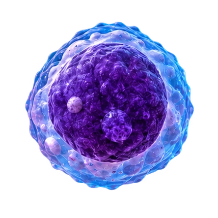
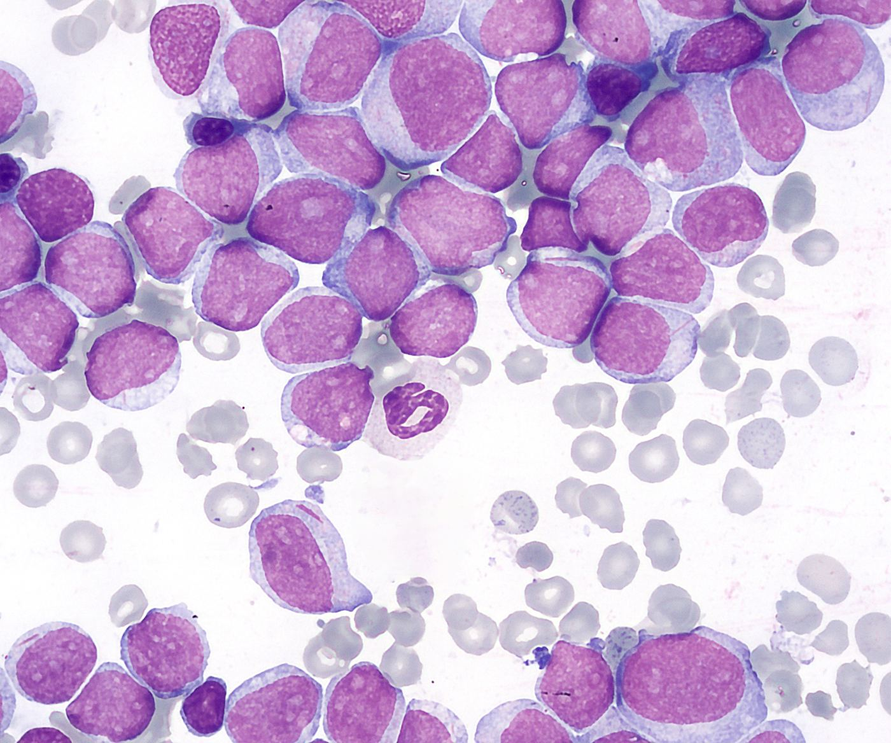
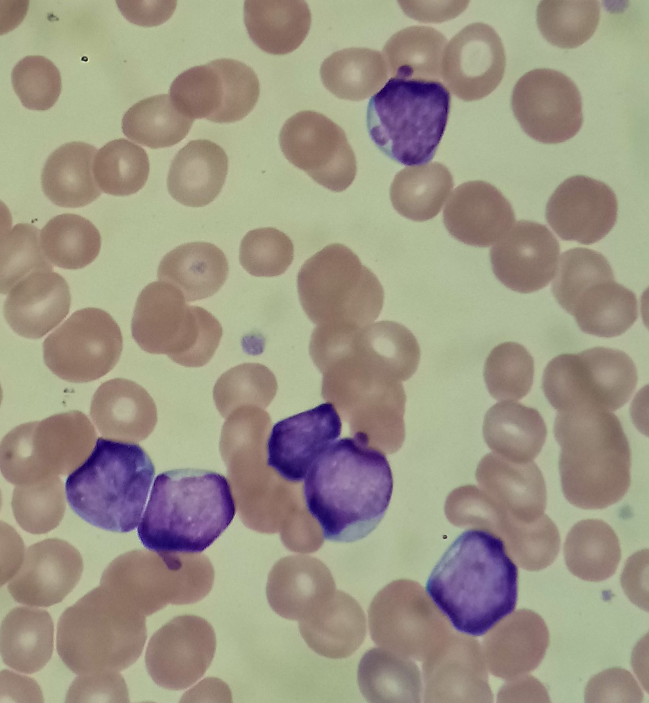

Altered instructions
DNA carries instructions for cell behavior. Changes in growth, repair, maturation, or survival pathways can help a cancer develop. Usually several changes are involved; most DNA changes do not cause cancer.
A strange-looking cell. An unexpected count. A change hidden in DNA. Follow the clues that help a laboratory recognize a blood disorder.

Choose a lesson. Each one pairs a visual clue with the biology behind it and the next laboratory question.

Immature myeloid cells accumulate. Look for the features of a blast.
Explore the slide →
Mature-looking lymphocytes can still be part of an abnormal population.
Explore the slide →
Another kind of blast. The microscope starts the investigation.
Explore the slide →
An activated defender can look unusual without being a cancer cell.
Explore the slide →Compare three example counts and learn why a high number is only the beginning.
Change the count →Healthy cells copy DNA, too. Cancer-driving changes can alter when cells divide, mature, or die.
Conceptual model, not patient data or a growth-rate prediction. The star marks an inherited cellular change. Different leukemias behave differently.
DNA carries instructions for cell behavior. Changes in growth, repair, maturation, or survival pathways can help a cancer develop. Usually several changes are involved; most DNA changes do not cause cancer.
Before a dividing cell splits, it copies its DNA. Daughter cells can inherit an existing cancer-driving change. DNA replication also happens in healthy cells—it is not itself the problem.
Descendants of the altered cell can accumulate when growth and survival controls fail. Related cells form a clone; additional changes can arise within it. Healthy immune responses can also expand cells, but remain regulated.
In acute leukemia, immature cells accumulate and normal blood production can be disrupted. Fewer functioning defenders, red cells, or platelets can contribute to infections, tiredness, or bleeding. CLL involves mature-looking cells and abnormal survival as well as growth.
Many cancer-related DNA changes are acquired during life. A change passed from one cell to its daughter cells is different from a change passed from parent to child.
How many cells are present, and which types make up the population?
What do the cells look like? Are there blasts or other unexpected features?
Antibody labels reveal patterns of cell proteins that help identify an abnormal population.
Chromosome and molecular tests look for changes that help classify the disease.
Laboratory scientists generate and evaluate these findings; pathologists and the clinical team combine them with the patient’s history.